ERS403 Sketchy Pharm Pictures
Every video from the ERS403 Pharm list (MD4): the Sketchy mnemonic scene, an exam snapshot, and a corrected, expanded explanation of every numbered icon. Open the original legend picture under any video to compare. Check off videos as you review them — progress is saved in this browser. Use the search box to jump to a specific drug class. Click the expand icon on an image to view it full screen.
1. Bisphosphonates, Raloxifene, Denosumab, Calcitonin
Exam snapshot
- Drugs: bisphosphonates (alendronate, risedronate, ibandronate, zoledronate, pamidronate), raloxifene (SERM), denosumab (anti-RANKL mAb), calcitonin; teriparatide is anabolic (PTH analog).
- Mechanism: bisphosphonates - pyrophosphate analogs that bind hydroxyapatite and induce osteoclast apoptosis; raloxifene - estrogen agonist in bone; denosumab - blocks RANKL; calcitonin - inhibits osteoclasts.
- Indications: postmenopausal and glucocorticoid-induced osteoporosis, Paget disease, hypercalcemia of malignancy, bone metastases.
- Adverse effects: bisphosphonates - esophagitis, osteonecrosis of jaw, atypical femur fractures, hypocalcemia; raloxifene - DVT/PE, hot flashes; denosumab - hypocalcemia, infections.
- Buzzwords: take alendronate fasting with water, stay upright 30 minutes; raloxifene lowers breast cancer risk; RANKL-RANK-OPG axis; PTH continuous causes resorption, pulsatile builds bone.
- 1Fresh piece of calcified chalk: Osteoporosis therapy: bisphosphonates, SERMs (raloxifene), denosumab and calcitonin inhibit bone resorption, modestly increasing bone mineral density and reducing fractures (teriparatide is anabolic).
- 2Osteo-builders: Osteoblasts build bone (secrete osteoid, express RANKL, ALP).
- 3Destructive class: Osteoclasts resorb bone (derived from monocyte/macrophage lineage; activated via RANKL-RANK).
- 4DONATE: "-dronate" suffix: bisphosphonates (alendronate, risedronate, ibandronate, zoledronate, pamidronate) are first-line for osteoporosis.
- 5Two P coins: Bisphosphonates are structural analogs of pyrophosphate (P-C-P backbone, resistant to hydrolysis).
- 6Large T-rex appetite: Bisphosphonates bind avidly to hydroxyapatite at sites of active bone remodeling.
- 7Classmate stuck in donation box: Osteoclasts take up bisphosphonate during resorption, which impairs their adherence (ruffled border) and function.
- 8Class waiting to enter: Osteoclast precursors are recruited and differentiate under RANKL/M-CSF signalling.
- 9Preventing class from entering: Bisphosphonates decrease osteoclast precursor development and recruitment.
- 10Classmate's popping balloon: Bisphosphonates induce osteoclast apoptosis (nitrogen-containing ones inhibit farnesyl pyrophosphate synthase).
- 11Elevated calci-yum icecream: Bisphosphonates (zoledronate, pamidronate) treat acute hypercalcemia by inhibiting bone resorption.
- 12Massive calcified rock with metastatic crab fossils: Hypercalcemia of malignancy (PTHrP, osteolytic metastases) is treated acutely with IV fluids, calcitonin and bisphosphonates.
- 13Disorganized bone display: Paget disease of bone (excess osteoclast resorption then disorganized bone) is treated with bisphosphonates; calcitonin is an alternative.⭐ Alkaline phosphatase is elevated in Paget disease.
- 14Corroded neck: Oral bisphosphonates cause esophagitis, esophageal ulcers and reflux; take with a full glass of water, upright for 30 minutes, empty stomach; avoid in esophageal disorders.
- 15Crumbling jaw bone: Bisphosphonates (and denosumab) rarely cause osteonecrosis of the jaw (especially high-dose IV, with dental procedures) and atypical femoral fractures.
- 16Falling calci-yum icecream: Calcitonin lowers serum calcium and can cause hypocalcemia.
- 17Falling calci-yum icecream: Bisphosphonates can cause hypocalcemia (correct vitamin D and calcium deficiency first); denosumab does as well.
- 18Female symbol: Estrogen replacement prevents postmenopausal bone loss but is not first line because of risks (breast cancer, VTE, stroke, endometrial cancer if unopposed).
- 19Female guarding class entrance: Estrogen inhibits osteoclast differentiation and promotes osteoclast apoptosis; estrogen loss at menopause drives bone loss.
- 20Relax: Raloxifene is a selective estrogen receptor modulator (SERM) used to treat and prevent postmenopausal osteoporosis.
- 21Relaxing the waiting classmates: Raloxifene is an agonist in bone (inhibiting osteoclast differentiation), but an antagonist in breast and uterus (reducing breast cancer risk, no endometrial hyperplasia); adverse effects include hot flashes, VTE/DVT and stroke.⭐ Raloxifene: bone and lipids yes; endometrium no, but VTE risk.
- 22PthD: Parathyroid hormone (PTH) has dual effects: continuous elevation causes net bone resorption, while intermittent dosing (teriparatide) is anabolic.
- 23Convincing osteo-builder to give crank-drill: PTH stimulates osteoblasts and stromal cells to express RANKL (and M-CSF), which activates osteoclasts.
- 24Crank-drill: RANKL (receptor activator of nuclear factor kappa-B ligand) is the osteoblast-derived signal that drives osteoclast formation and activation; osteoprotegerin (OPG) is its decoy receptor.
- 25Active classmate with crank-drill: RANKL binding RANK on osteoclasts and precursors increases their differentiation and activity.
- 26Dino suit man grabbing crank-drill: Denosumab is a monoclonal antibody against RANKL, inhibiting osteoclast formation and function; treats osteoporosis (SC every 6 months) and bone metastases.⭐ Stopping denosumab causes rebound fractures; hypocalcemia risk.
- 27Antibody spikes: Denosumab is a human IgG2 monoclonal antibody ("-mab").
- 28Curator toning it down: Calcitonin (secreted by thyroid parafollicular C cells) "tones down" calcium by inhibiting resorption; limited efficacy in osteoporosis, weaker than bisphosphonates.
- 29Curator grabbing classmate: Calcitonin directly inhibits osteoclast activity (binding calcitonin receptors), decreasing bone resorption; also analgesic for acute vertebral fractures.
- 30Calci-yum ice cream pouring down flank: Calcitonin promotes renal calcium excretion, lowering serum calcium.
Show the original legend picture
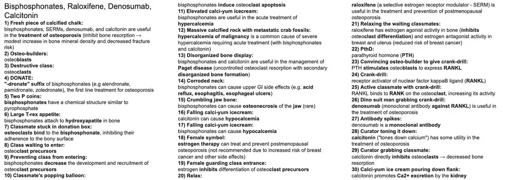
2. Teriparatide, Vitamin D, Cinacalcet, Sevelamer
Exam snapshot
- Drugs: teriparatide (PTH 1-34), abaloparatide, vitamin D (cholecalciferol, ergocalciferol, calcitriol, paricalcitol), cinacalcet (calcimimetic), sevelamer (phosphate binder).
- Mechanism: intermittent PTH is anabolic to bone; calcitriol increases intestinal and renal Ca/P absorption; cinacalcet activates the parathyroid calcium-sensing receptor to lower PTH; sevelamer binds intestinal phosphate.
- Indications: severe osteoporosis (teriparatide), rickets/osteomalacia/hypoparathyroidism/CKD (vitamin D), secondary hyperparathyroidism (cinacalcet), hyperphosphatemia in CKD (sevelamer).
- Adverse effects: hypercalcemia (teriparatide, vitamin D), osteosarcoma warning with teriparatide, hypocalcemia and QT prolongation (cinacalcet), GI upset (sevelamer).
- Buzzwords: pulsatile PTH builds bone, continuous PTH resorbs bone; CKD means low calcitriol, high phosphate, high PTH; Chvostek and Trousseau signs indicate hypocalcemia.
- 1Osteo-builders: Osteoblasts build bone; their function and maturation are stimulated by intermittent teriparatide and by vitamin D (calcitriol), increasing bone mineral density.
- 2Destructive classmates: Osteoclasts resorb bone; they are activated indirectly by PTH and calcitriol via osteoblast-derived RANKL, increasing bone resorption and turnover.
- 3Released calcified bones: Osteoclast activity releases calcium from bone into the circulation.
- 4Released P fossil: Osteoclast resorption also releases phosphate from bone.
- 5PthD paleontologist: Parathyroid hormone (PTH) raises serum calcium and lowers serum phosphate.
- 6PthD lab: The parathyroid glands (chief cells) secrete PTH.
- 7Calcified bone receiving: The calcium-sensing receptor (CaSR) on parathyroid chief cells senses extracellular calcium (a Gq-coupled receptor).
- 8PthD stuck behind bones: High serum calcium activates CaSR and inhibits PTH synthesis and secretion; low calcium stimulates PTH.⭐ Negative feedback: high Ca2+ suppresses PTH; high phosphate and low calcitriol raise it.
- 9PthD convincing osteo-builder to give up crank-drill: PTH binds PTH1 receptors on osteoblasts, stimulating release of RANKL (and M-CSF), which activates osteoclasts.
- 10Classmate receiving crank-drill: RANKL binds RANK on osteoclasts and precursors, increasing differentiation and bone resorption.
- 11PthD teaching osteo-builders: Continuous (high-level) PTH exposure directly stimulates osteoblasts but indirectly activates osteoclasts, producing net bone resorption.
- 12PthD gathering bones and dropping P fossils: In the kidney, PTH increases calcium reabsorption (distal tubule) and decreases phosphate reabsorption in the proximal tubule (phosphaturia).
- 131-head added to Calci-TRON: Renal 1-alpha-hydroxylase converts 25-hydroxyvitamin D (calcidiol) to 1,25-dihydroxyvitamin D (calcitriol), the active form.
- 14PthD adding final piece to Calci-TRON: PTH upregulates 1-alpha-hydroxylase, increasing calcitriol production.
- 15PthD teaching assistant (TA): Teriparatide is recombinant PTH 1-34 (abaloparatide is a PTHrP analog), given by daily SC injection.
- 16TA teaching osteo-builders: Intermittent (daily pulsatile) teriparatide stimulates osteoblast maturation and bone formation, an anabolic effect, in contrast to continuous PTH which causes resorption.⭐ Pulsatile PTH builds bone; continuous PTH resorbs bone.
- 17Fresh piece of calcified chalk: Teriparatide treats severe osteoporosis (increases bone density and decreases vertebral fractures), especially in high fracture risk or after bisphosphonate failure.
- 18TA gathering bones and dropping P fossils: Like PTH, teriparatide increases renal calcium reabsorption and phosphate excretion.
- 19TA adding final piece to Calci-TRON: Teriparatide increases 1-alpha-hydroxylase activity and calcitriol synthesis.
- 20Solar D3 battery: Vitamin D3 (cholecalciferol) comes from UVB conversion of 7-dehydrocholesterol in skin and from animal sources (dairy, fish).
- 21Earth-friendly D2 battery: Vitamin D2 (ergocalciferol) comes from plant sources and supplements.
- 22Robot body added to D battery in liver-barrow: Hepatic 25-hydroxylase converts vitamin D to 25-hydroxyvitamin D (calcidiol), the storage form measured clinically.
- 23Calci-TRON gathering bones and fossils from dump site: Calcitriol increases renal reabsorption of calcium and phosphate.
- 24Calci-TRON gathering bones and fossils from GI truck: Calcitriol increases intestinal absorption of calcium and phosphate (via calbindin), the main way it raises serum calcium.
- 25Calci-TRONI delivering crank-drills: Calcitriol stimulates osteoblasts to release RANKL, activating osteoclasts and mobilizing calcium and phosphate from bone.
- 26Calci-TRON collapsing PthD lab: Calcitriol inhibits PTH synthesis by the parathyroid gland (negative feedback); used in secondary hyperparathyroidism of CKD.
- 27Calci-TRON teaching osteo-builders: Calcitriol also promotes osteoblast maturation and bone mineralization (increased bone formation).
- 28Fresh piece of calcified chalk: Vitamin D (with calcium) is used for prevention and treatment of osteoporosis, particularly in deficiency.
- 29Calci-TRON stabilizing rickety tower: Vitamin D treats rickets (children) and osteomalacia (adults) by restoring bone mineralization.
- 30Calci-TRON stabilizing broken kidney: In chronic kidney disease, the kidney cannot make calcitriol (low 1-alpha-hydroxylase), so calcitriol or analogs (paricalcitol) prevent hypocalcemia and secondary hyperparathyroidism.
- 31Scaly knee and elbow pads: Topical vitamin D analogs (calcipotriene) treat plaque psoriasis by inhibiting keratinocyte proliferation.
- 32Calci-TRON saving falling calcified bones: Calcitriol is used for long-term management of hypocalcemia, such as hypoparathyroidism (the OCR's hypothyroidism likely means hypoparathyroidism).check original
- 33Falling PthD: Hypocalcemia is commonly caused by hypoparathyroidism, with decreased PTH leading to decreased renal calcitriol production, calcium reabsorption and bone resorption.
- 34Undone bowtie on PthD: Thyroid surgery (thyroidectomy) can damage or remove parathyroid glands, causing hypoparathyroidism and postoperative hypocalcemia.
- 35Shaking structure: Severe hypocalcemia can cause seizures and prolonged QT.
- 36Tense fist: Hypocalcemia increases neuromuscular excitability: perioral/acral paresthesias, muscle cramps, laryngospasm, trismus and tetany (Chvostek and Trousseau signs).⭐ Chvostek = facial twitch; Trousseau = carpal spasm with BP cuff.
- 37Raised calci-yum ice cream: Teriparatide and vitamin D can cause hypercalcemia (stones, bones, groans, psychiatric overtones); teriparatide is also avoided in Paget disease, prior skeletal radiation and bone metastases because of osteosarcoma concern.
- 38Calculator at the calcified bone receptor: Cinacalcet, a calcimimetic, allosterically activates the parathyroid calcium-sensing receptor, increasing its sensitivity to calcium and decreasing PTH secretion.⭐ Adverse effects: hypocalcemia, nausea, QT prolongation.
- 39Calculating pile of calcified bones: Cinacalcet treats secondary hyperparathyroidism in CKD on dialysis, parathyroid carcinoma and refractory primary hyperparathyroidism hypercalcemia.
- 40Shoveling fossils in the GI truck: Sevelamer is a non-calcium phosphate-binding polymer that binds dietary phosphate in the gut, decreasing absorption (also lowers LDL).
- 41Shoveling pile of fossils: Sevelamer (and lanthanum, calcium acetate) treats hyperphosphatemia of chronic kidney disease, preventing secondary hyperparathyroidism and vascular calcification; GI upset is the main adverse effect.
Show the original legend picture
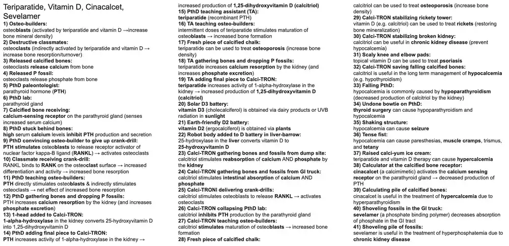
3. Insulin, Sulfonylureas, Meglitinides, GLP-1 Agonists, DPP-4 Inhibitors
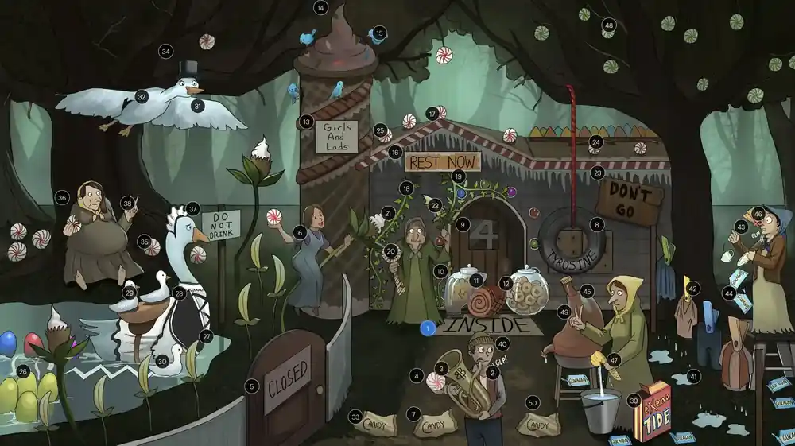
Exam snapshot
- Drugs: insulins (rapid: lispro/aspart/glulisine; short: regular; intermediate: NPH; long: glargine/detemir/degludec), sulfonylureas, meglitinides, GLP-1 agonists (-tide), DPP-4 inhibitors (-gliptin), metformin, TZDs, SGLT2 inhibitors (-gliflozin).
- Mechanisms: insulin activates a receptor tyrosine kinase (GLUT4 insertion); sulfonylureas/meglitinides close beta-cell K-ATP channels; GLP-1 agonists mimic incretin; DPP-4 inhibitors prevent incretin breakdown; metformin reduces hepatic gluconeogenesis; TZDs are PPAR-gamma agonists; SGLT2i cause glycosuria.
- Key indications: metformin first-line for type 2 DM; insulin for type 1, DKA, hyperkalemia (regular IV) and advanced type 2; GLP-1 agonist or SGLT2i preferred with ASCVD, HF or CKD.
- Key adverse effects: hypoglycemia and weight gain (insulin, sulfonylureas); lactic acidosis and B12 deficiency (metformin); HF, edema, fractures (TZDs); genitourinary infections and euglycemic DKA (SGLT2i); pancreatitis and thyroid C-cell tumor warning (GLP-1 agonists).
- Buzzwords/antidotes: C-peptide (high with secretagogues, low with exogenous insulin); chlorpropamide disulfiram-like reaction; treat hypoglycemia with glucose/dextrose or glucagon; check K+ before insulin in DKA; A1c goal below 7% for most adults.
- 1Welcome INSIDE mat: Insulin is the anabolic, storage hormone of the body, promoting uptake and storage of glucose, fat and amino acids.
- 2LangerHansel: The islets of Langerhans of the pancreas contain beta cells (insulin), alpha cells (glucagon) and delta cells (somatostatin).
- 3Beta-2 tuba: Pancreatic beta cells synthesize insulin; secretion is stimulated by glucose (main), amino acids, GLP-1/GIP incretins, vagal input and sympathetic beta-2 stimulation (alpha-2 stimulation inhibits it).
- 4LangerHansel's candy: Glucose is the most potent stimulant of insulin secretion; oral glucose gives a bigger response than IV via incretins.
- 5Closed gate around banana candy flowers: Glucose uptake (GLUT2) raises beta-cell ATP, which closes ATP-sensitive K+ channels (Kir6.2/SUR1).
- 6Gretel rushing in on calci-yum icecream flower: Closing the K+ channels depolarizes the beta cell, opening voltage-gated Ca2+ channels; Ca2+ influx triggers exocytosis of insulin.⭐ Sulfonylureas exploit this exact step.
- 7C wrapper: C-peptide is cleaved from proinsulin in secretory granules and released in equimolar amounts with insulin; it indicates endogenous insulin production (low in exogenous insulin administration, high in insulinoma or sulfonylurea use).⭐ Hypoglycemia with high C-peptide = insulinoma or sulfonylurea; low C-peptide = exogenous insulin.
- 8Tyrosine tire swing: The insulin receptor is a receptor tyrosine kinase; insulin binding autophosphorylates the receptor and activates IRS-1/PI3K-Akt and MAPK pathways.
- 94 on open door: Insulin promotes insertion of GLUT4 into the membrane of skeletal muscle and adipose tissue, increasing glucose uptake; brain, RBCs, and beta cells use insulin-independent transporters.
- 10Full liver candy jar: In the liver, insulin increases glycogenesis, glycolysis and lipogenesis and decreases glycogenolysis and gluconeogenesis.
- 11Glycogen glazed ham: In muscle, insulin increases glycogen synthesis and protein synthesis (amino acid uptake) while decreasing proteolysis.
- 12Full fatty donut jar: In adipose tissue, insulin stimulates lipoprotein lipase, triglyceride storage and decreases hormone-sensitive lipase (lipolysis).
- 13Girls And Lads: Rapid-acting insulin analogs: Glulisine, Aspart, Lispro; given right before or with meals (prandial/bolus).
- 14Tall immediate peak: Rapid-acting analogs have onset about 15 minutes, peak 1-2 hours and short duration (3-5 hours).
- 15Birds nibbling the peak: These analogs blunt the postprandial glucose spike and are used for mealtime bolus and in insulin pumps.
- 16Rest Now: Regular insulin is short-acting; NPH (neutral protamine Hagedorn) is intermediate-acting.⭐ Regular insulin is the only IV insulin.
- 17Delayed peak: Regular insulin: onset 30-60 minutes, peak 2-4 hours, duration 5-8 hours; NPH: onset 1-2 hours, peak 4-12 hours, duration 12-18 hours (more delayed than regular).
- 18Ivy under "R": Regular insulin is the only formulation given intravenously (also SC) and is used in hospitalized patients and emergencies.
- 19Ivy next to eaten banana: IV regular insulin (with glucose to prevent hypoglycemia) is used to treat hyperkalemia by shifting K+ into cells.
- 20Candy key: Diabetic ketoacidosis (DKA), a complication of insulin deficiency (type 1) with hyperglycemia, ketosis, anion-gap metabolic acidosis, vomiting, polyuria and Kussmaul respirations.
- 21Ivy next to candy key: DKA is treated with IV fluids, IV regular insulin infusion and electrolyte (K+) replacement; check K+ before insulin because insulin drives K+ into cells and can cause hypokalemia.⭐ Start insulin only when K+ is above 3.3 mEq/L.
- 22Eaten banana candy: Insulin lowers serum K+ by increasing Na+/K+ ATPase activity in skeletal muscle, driving K+ into cells.
- 23Don't Go: Long-acting insulin analogs: Detemir and Glargine (also degludec) provide basal insulin.
- 24Flat roof: Glargine and detemir (and degludec) have prolonged duration and a relatively flat (peakless) profile, providing basal coverage; glargine has no peak and should not be mixed with other insulins.
- 25Falling candy: Hypoglycemia is the most common adverse effect of insulin, presenting with adrenergic symptoms (tachycardia, palpitations, sweating, tremor, anxiety) and neuroglycopenia (confusion, seizure, coma).
- 26Sulfa egg laying swan: Sulfonylureas (glyburide, glipizide, glimepiride, tolbutamide) are structurally related to sulfonamides; cross-reactivity with sulfa-antibiotic allergy is rare but a labeled caution.
- 27Sulfa swan lake behind CLOSED banana gate: Sulfonylureas bind the SUR1 subunit of the beta-cell ATP-sensitive K+ channel, closing it, causing depolarization, Ca2+ influx and insulin release (insulin secretagogue).
- 28Mother swan in a maid outfit: 1st-generation sulfonylureas (tolbutamide, chlorpropamide, tolazamide; "-amide" names) are rarely used today; chlorpropamide has a very long duration of action.
- 29Goslings riding on mother's back: 2nd-generation sulfonylureas (glyburide, glipizide, glimepiride; "gli-" prefix) are more potent, require smaller doses and are more commonly used; glyburide and glimepiride are long-acting.
- 30Short zig-zagging gosling: Glipizide has the shortest duration of action of the 2nd-generation agents and a lower hypoglycemia risk; preferred in renal impairment and the elderly.⭐ Glyburide has active metabolites - avoid in renal failure.
- 31Gliding: "-glinide" suffix: meglitinides (repaglinide, nateglinide).
- 32Gliding goose behind CLOSED banana gate: Meglitinides close the beta-cell ATP-sensitive K+ channel at a different binding site on SUR1, stimulating short-acting insulin release; given before meals to cover postprandial glucose.
- 33C wrapper: Because they stimulate endogenous insulin secretion, sulfonylureas and meglitinides raise C-peptide levels along with insulin.
- 34Father gliding goose can't lay eggs: Meglitinides are not sulfonamide derivatives, so they can be used in patients with sulfa/sulfonylurea allergy.
- 35Falling candy: Sulfonylureas and meglitinides can cause hypoglycemia (more with long-acting sulfonylureas, especially with renal impairment, missed meals, or elderly patients).
- 36Fat old hag: Insulin secretagogues cause weight gain from increased insulin levels.
- 37"Do not drink" next to mother sulfonylurea swan: 1st-generation sulfonylureas, especially chlorpropamide, can cause a disulfiram-like reaction with alcohol (flushing, nausea); chlorpropamide also causes SIADH.
- 382 fingers: Sulfonylureas and meglitinides are used only for type 2 diabetes, because they require functioning beta cells.
- 39ExenaTIDE detergent: "-tide" suffix: GLP-1 receptor agonists (exenatide, liraglutide, dulaglutide, semaglutide).
- 40Gulp activated by hag: GLP-1 receptor agonists mimic the incretin GLP-1: they increase glucose-dependent insulin release, decrease glucagon release, slow gastric emptying and increase satiety (weight loss).⭐ Exenatide was derived from Gila monster saliva (exendin-4).
- 414 DRIPPING laundry items: DPP-4 inhibitors block dipeptidyl peptidase-4, the enzyme that degrades GLP-1 and GIP, prolonging their action.
- 42Clipped in clothespins: "-gliptin" suffix: DPP-4 inhibitors (sitagliptin, saxagliptin, linagliptin, alogliptin).
- 43Endogenous gulps: DPP-4 inhibitors raise endogenous GLP-1 (and GIP) levels, increasing glucose-dependent insulin release, decreasing glucagon and gastric emptying (weight-neutral effects).
- 44Falling empty glucagon packets: GLP-1 agonists and DPP-4 inhibitors decrease glucagon secretion, lowering hepatic glucose output.
- 45Sealed gastric container: These agents slow gastric emptying, contributing to satiety and reduced postprandial glucose; GI side effects follow, particularly with GLP-1 agonists.
- 46Clothespin clipping nose: DPP-4 inhibitors may increase risk of nasopharyngitis and upper respiratory tract infections.
- 47Squeezing pancreas sponge: GLP-1 agonists (and DPP-4 inhibitors) are associated with acute pancreatitis; avoid in patients with a history of pancreatitis. GLP-1 agonists are also contraindicated with a personal or family history of medullary thyroid carcinoma or MEN2.⭐ Boxed warning: thyroid C-cell tumors with liraglutide/semaglutide.
- 48Candies NOT falling: GLP-1 agonists and DPP-4 inhibitors have a low risk of hypoglycemia because their insulin effect is glucose-dependent (risk rises when combined with sulfonylureas or insulin).
- 492 fingers: GLP-1 agonists and DPP-4 inhibitors are used for type 2 diabetes and need residual beta-cell function.
- 50C wrapper: These drugs increase endogenous insulin release and so raise C-peptide levels.
Show the original legend picture
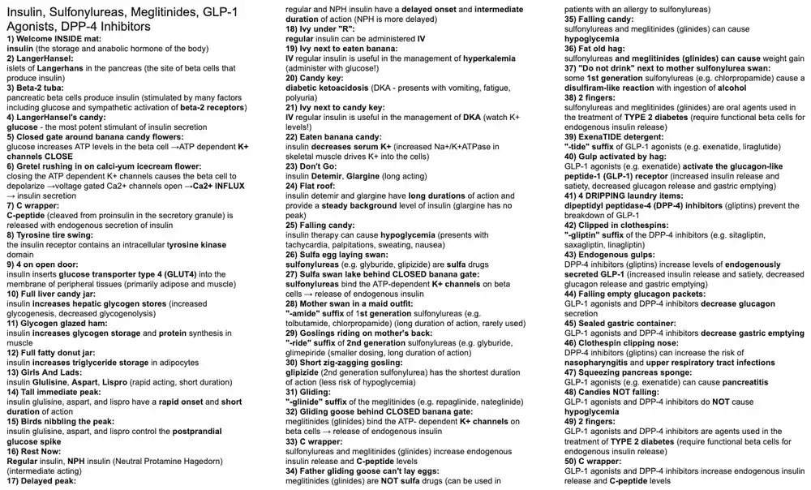
4. Metformin, Thiazolidinediones, Pramlintide, SGLT2 Inhibitors
Exam snapshot
- Drugs: metformin (biguanide), pioglitazone/rosiglitazone (TZDs), pramlintide (amylin analog), acarbose/miglitol (alpha-glucosidase inhibitors), canagliflozin/dapagliflozin/empagliflozin (SGLT2 inhibitors).
- Mechanisms: metformin - AMPK activation, decreased hepatic gluconeogenesis; TZDs - PPAR-gamma agonists; pramlintide - decreases glucagon and gastric emptying; acarbose - blocks brush border disaccharidases; SGLT2i - block proximal tubule glucose reabsorption.
- Indications: type 2 diabetes (metformin first-line; pramlintide also type 1); SGLT2i also for heart failure and CKD; metformin for PCOS.
- Adverse effects: metformin - lactic acidosis, GI upset, B12 deficiency; TZDs - edema, HF, weight gain, fractures; pramlintide - severe hypoglycemia with insulin; acarbose - flatulence; SGLT2i - UTI, candidiasis, volume depletion, euglycemic DKA.
- Buzzwords: no hypoglycemia as monotherapy (metformin, TZD, acarbose, SGLT2i); TZDs contraindicated in class III-IV HF; metformin contraindicated at eGFR below 30; hypoglycemia on acarbose needs glucose, not sucrose.
- 12nd grade: Metformin, thiazolidinediones, pramlintide, alpha-glucosidase inhibitors and SGLT2 inhibitors are used for type 2 diabetes (pramlintide also type 1); most need residual beta-cell function or act independently of endogenous insulin.
- 2Metaphor: Metformin, a biguanide, is the first-line oral agent for type 2 diabetes.
- 3Bitten mitochondrial candy: Metformin inhibits mitochondrial glycerophosphate dehydrogenase (and complex I), shifting redox state and decreasing hepatic gluconeogenesis.
- 4AMPKandy: Metformin activates AMP-activated protein kinase (AMPK), decreasing hepatic gluconeogenesis and increasing insulin sensitivity and glucose uptake in muscle.
- 5Stopping candy release from liver bag: The main effect of metformin is decreased hepatic glucose production (gluconeogenesis).⭐ Metformin works without stimulating insulin secretion, so no hypoglycemia.
- 6INSIDE open candy box: Metformin increases peripheral insulin sensitivity (reduces insulin resistance); it is useful in PCOS as well.
- 7Spilled sour milk: Metformin can cause lactic acidosis (rare, but a boxed warning) by inhibiting mitochondrial lactate metabolism.⭐ Contraindicated in severe renal impairment, hepatic disease, alcohol abuse.
- 8Cracked kidney tray: Renal insufficiency (eGFR below 30) decreases metformin clearance and increases risk of lactic acidosis.
- 9Nauseated: Metformin causes GI effects: anorexia, nausea, vomiting, diarrhea, abdominal discomfort; long-term use can also cause vitamin B12 deficiency.
- 10Skinny kid: Metformin is weight neutral or causes modest weight loss.
- 11Glitter: "-glitazone" suffix: thiazolidinediones (pioglitazone, rosiglitazone).
- 12PPARy in circle: Thiazolidinediones are agonist ligands of PPAR-gamma, a nuclear receptor that regulates gene transcription of insulin-responsive genes, primarily in adipose tissue.
- 13Turtle neck: PPAR-gamma activation upregulates adiponectin (adipokine), increasing insulin sensitivity and fatty acid oxidation.
- 14Elevated fatty donut jar: TZDs promote adipocyte differentiation and increase the number of small, insulin-sensitive adipocytes.
- 15Eating fatty donut: TZDs increase fatty acid uptake and triglyceride storage in adipose tissue and promote fatty acid oxidation, lowering circulating free fatty acids and triglycerides.
- 164 on open door: TZDs upregulate GLUT4 expression, increasing peripheral glucose uptake.
- 17INSIDE open candy box: Net effect of TZDs: improved insulin sensitivity in muscle, fat and liver (less hepatic gluconeogenesis).⭐ Onset is slow (weeks).
- 18Fat belly: TZDs cause weight gain (fluid retention and increased subcutaneous fat).
- 19Baggy pants: TZDs cause fluid retention and peripheral edema (increased renal sodium reabsorption).
- 20Crushed failing heart balloon: TZD-induced fluid retention can precipitate or worsen heart failure; contraindicated in NYHA class III-IV heart failure.⭐ Rosiglitazone also carries increased MI risk; pioglitazone linked to bladder cancer.
- 21Fractured chair leg: TZDs reduce bone mineral density and increase risk of distal extremity fractures, especially in women.
- 22Amy and Lynn: Pramlintide is an injectable analog of amylin (islet amyloid polypeptide, co-secreted with insulin from beta cells); it decreases glucagon, slows gastric emptying and increases satiety.
- 23Closed gastric water cooler: Pramlintide slows gastric emptying, blunting postprandial glucose peaks.
- 24Falling empty glucagon packets: Pramlintide suppresses postprandial glucagon secretion.
- 251 and 2: Pramlintide is an adjunct to mealtime insulin in both type 1 and type 2 diabetes.
- 26Eaten cupcake: Pramlintide is given before meals to control the postprandial glucose spike.
- 27Falling candy: Pramlintide can cause severe hypoglycemia, especially when co-administered with insulin (reduce the insulin dose).⭐ Boxed warning: severe hypoglycemia.
- 28Nauseated: Pramlintide commonly causes nausea, vomiting and anorexia (weight loss).
- 29"Monosaccharide free": Inhibiting intestinal alpha-glucosidase prevents breakdown of disaccharides and oligosaccharides into absorbable monosaccharides.
- 30A-Carb wigglers: Acarbose and miglitol are alpha-glucosidase inhibitors.
- 31Brush border flags: Alpha-glucosidase inhibitors act on enzymes (sucrase, maltase, glucoamylase) at the small intestinal brush border.
- 32Delayed bag opening: Carbohydrate digestion and absorption are delayed and spread further along the small intestine.
- 33Eaten cupcake: These agents blunt the postprandial glucose spike (taken with the first bite of a meal).
- 34Leaky bathroom puddle: Undigested carbohydrate reaching the colon is fermented by bacteria, causing flatulence, diarrhea and abdominal pain; hypoglycemia must be treated with glucose (not sucrose) if on these drugs.⭐ Treat hypoglycemia with glucose, not table sugar, in patients on acarbose.
- 35Flossing: "-gliflozin" suffix: SGLT2 inhibitors (canagliflozin, dapagliflozin, empagliflozin, ertugliflozin).
- 36Salty Glucose Co.: SGLT2 in the proximal tubule reabsorbs about 90% of filtered glucose; inhibition produces glycosuria and lowers plasma glucose independent of insulin.
- 37Pro Cart Track: SGLT2 inhibitors act at the proximal convoluted tubule of the nephron.
- 38Bladder cup: SGLT2 inhibitors increase risk of urinary tract infections and genital mycotic infections because of glycosuria.⭐ Rare: Fournier gangrene and euglycemic DKA.
- 39Snow hitting crotch: SGLT2 inhibitors increase risk of vulvovaginal candidiasis (and balanitis in men).
- 40Canada: Candida albicans, the opportunistic yeast that causes candidiasis.
- 41Fainting: SGLT2 inhibitors cause osmotic diuresis, volume depletion and hypotension (orthostasis); they also reduce blood pressure and cardiorenal events.
- 42Cracked kidney tray: SGLT2 inhibitors have reduced glycemic efficacy and are avoided in significant renal insufficiency (low eGFR), though empagliflozin/dapagliflozin are used for CKD/HF benefit at lower eGFR.
Show the original legend picture
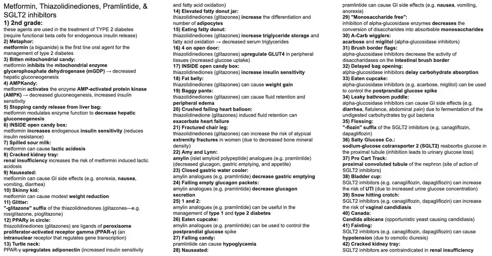
5. ADH, DDAVP, ADH Receptor Antagonists
Exam snapshot
- Drugs: desmopressin (DDAVP), vasopressin (ADH); V2 antagonists (vaptans): conivaptan (IV), tolvaptan (oral); demeclocycline for SIADH.
- Mechanism: ADH V1 (Gq) = vasoconstriction; V2 (Gs, cAMP) = aquaporin-2 insertion in collecting duct and release of vWF and factor VIII. DDAVP is V2-selective.
- Indications: DDAVP for central DI, mild hemophilia A, von Willebrand disease (not type 3), nocturnal enuresis; vasopressin for septic shock/variceal bleeding; vaptans for SIADH hyponatremia.
- Nephrogenic DI treated with thiazides, amiloride (lithium DI), NSAIDs. Adverse: DDAVP hyponatremia; vaptans overly rapid Na+ correction (osmotic demyelination), tolvaptan hepatotoxicity.
- Buzzwords: central DI responds to DDAVP, nephrogenic DI does not; SIADH = euvolemic hyponatremia with high urine osmolality; '-vaptan' = V2 blocker; demeclocycline causes nephrogenic DI.
- 1Collecting duct: The collecting duct (principal cells) is the main renal site of action of antidiuretic hormone (ADH, vasopressin).
- 2Hydrating waterboy: ADH (vasopressin) is the hormone that retains free water; released in response to high plasma osmolality or hypovolemia.⭐ ADH is made in the supraoptic and paraventricular nuclei of the hypothalamus.
- 3Posterior water jug: ADH is synthesized in the hypothalamus but stored and released from the posterior pituitary (neurohypophysis).
- 4V1 receptor (Q-shaped green): ADH activates V1 receptors, which are Gq-coupled: phospholipase C -> IP3 + DAG -> increased intracellular Ca2+.
- 5Constricted golf club: V1 activation on vascular smooth muscle causes vasoconstriction and raises blood pressure (hence the name vasopressin).⭐ Vasopressin is used as a pressor in septic shock.
- 6V2 receptor (S-shaped green): ADH activates V2 receptors, which are Gs-coupled: adenylyl cyclase -> increased cAMP -> PKA.
- 7Translocation of pure water: V2 activation on the basolateral membrane of collecting duct principal cells causes insertion of aquaporin-2 channels into the apical membrane, so free water is reabsorbed and urine is concentrated.⭐ V2 = 2 = water (aquaporin-2); V1 = vasoconstriction.
- 8Endothelial tile: Extrarenal V2 receptors are found on vascular endothelium.
- 9von Willebrand pool table: V2 activation on vascular endothelium causes release of von Willebrand factor (vWF) from Weibel-Palade bodies.
- 108-ball: V2 activation on vascular endothelium also causes release of factor VIII (carried by vWF).
- 11Insipidus fountain: Diabetes insipidus (DI) = polyuria with dilute urine and polydipsia due to lack of ADH action; plasma osmolality and serum Na+ tend to be high.
- 12Dehydrating kidney sand trap: Nephrogenic DI: the kidney is resistant to ADH, so ADH levels are normal or high.
- 13Ignoring waterboy: Nephrogenic DI occurs when the collecting duct does not respond appropriately to ADH (V2 receptor or aquaporin-2 defect, or drug-induced).⭐ Water deprivation test: urine stays dilute after desmopressin in nephrogenic DI.
- 14Lift-ium balloons: Lithium is the classic drug cause of nephrogenic DI (enters principal cells via ENaC and impairs ADH signaling/aquaporin-2 expression).⭐ Other causes: demeclocycline, hypercalcemia, hypokalemia.
- 15Chloro-thighs: Thiazide diuretics treat nephrogenic DI: volume depletion increases proximal Na+/water reabsorption, so less fluid reaches the collecting duct and urine output falls (paradoxical effect).
- 16Almond cart (amiloride): Amiloride (K+-sparing ENaC blocker) treats nephrogenic DI, especially lithium-induced.
- 17Falling lift-ium balloon man: Amiloride treats lithium-induced DI by blocking ENaC entry of Li+ into collecting duct cells, reducing intracellular lithium.⭐ Amiloride is the drug of choice for lithium nephrogenic DI.
- 18Fire extinguisher: NSAIDs (e.g. indomethacin) treat nephrogenic DI by decreasing prostaglandin-mediated GFR/renal blood flow and prostaglandin antagonism of ADH, which reduces urine volume.
- 19Dehydrating brain sand trap: Central DI: the brain/pituitary fails to make or release enough ADH (e.g. head trauma, neurosurgery, tumor, hypophysitis).
- 20Absent waterboys: Central DI occurs when the hypothalamic-pituitary axis does not release adequate ADH; urine osmolality rises after desmopressin.
- 21Waterboy entering exogenously: Exogenous ADH replacement treats central DI.
- 22Desert-mobile: Desmopressin acetate (DDAVP), a long-acting synthetic ADH analog, is the treatment of choice for central DI (intranasal, oral, or IV/SC).
- 23V-2 engine: DDAVP is highly selective for the V2 receptor with minimal V1 pressor activity.⭐ Because it spares V1, DDAVP causes little vasoconstriction.
- 24Scratched von Willebrand felt: DDAVP treats von Willebrand disease (types 1 and some 2A) by releasing stored vWF from endothelium.⭐ DDAVP is ineffective in type 3 vWD (no vWF stores).
- 25Bruised with mucosal bleeding: Von Willebrand disease (deficient or defective vWF; most common inherited bleeding disorder) causes easy bruising and mucosal bleeding (epistaxis, menorrhagia); platelet-type bleeding with prolonged bleeding time.
- 26Missing 8-ball in A-frame: DDAVP treats mild hemophilia A by releasing factor VIII from vascular endothelium.
- 27Bleeding knee joint: Hemophilia A (X-linked recessive factor VIII deficiency) causes hemarthrosis and prolonged bleeding after minor procedures; PTT is prolonged with normal PT and bleeding time.
- 28Wet mattress: DDAVP treats nocturnal enuresis by decreasing nighttime urine production.
- 29Falling salty peanut shells: DDAVP can cause hyponatremia (water retention); counsel on fluid restriction.⭐ Hyponatremia and seizures are the main DDAVP toxicity.
- 30Bulging venous golf clubs: Vasopressin (or its analog terlipressin) is useful in esophageal variceal bleeding: V1-mediated splanchnic vasoconstriction lowers portal pressure.⭐ Octreotide is more commonly used first-line for variceal bleeding.
- 31Brain-shaped water hazard: Syndrome of inappropriate ADH secretion (SIADH): euvolemic hyponatremia with concentrated urine; causes include small cell lung cancer, CNS disease, pulmonary disease, and drugs (carbamazepine, SSRIs, cyclophosphamide).
- 32Over-hydrating waterboy: SIADH is caused by excess ADH production or release, producing free water retention, low serum osmolality and inappropriately high urine osmolality.
- 33Vaporizer: The '-vaptan' suffix denotes ADH (vasopressin) receptor antagonists: conivaptan (IV, V1a/V2) and tolvaptan (oral, selective V2), used for SIADH and euvolemic or hypervolemic hyponatremia (e.g. heart failure).
- 34Wet pants: Vaptans block V2 and promote aquaresis (excretion of free water without electrolyte loss), correcting hyponatremia.
- 35Elevated peanuts hitting head: Overly rapid correction with vaptans can cause overcorrection (hypernatremia) and central pontine myelinolysis / osmotic demyelination (dysarthria, dysphagia, quadriparesis, locked-in state).⭐ Limit Na+ correction to under 8-10 mEq/L per 24 h; tolvaptan can also be hepatotoxic.
- 36Bicycle (demeclocycline): Demeclocycline, a tetracycline that induces nephrogenic DI, treats SIADH when fluid restriction fails (vaptans are an alternative); do not use in pregnancy or children (teeth/bone effects).
Show the original legend picture
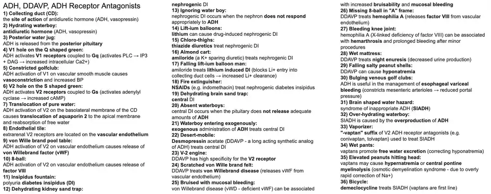
6. Growth Hormone, Mecasermin, Octreotide, Pegvisomant
Exam snapshot
- Drugs: somatropin (recombinant GH), mecasermin (IGF-1), octreotide/lanreotide (somatostatin analogs), pegvisomant (GH receptor antagonist), cabergoline/bromocriptine (D2 agonists).
- Mechanism: GH acts via JAK2/STAT receptor and IGF-1; octreotide inhibits GH and GI hormones via somatostatin receptors; pegvisomant blocks the GH receptor; D2 agonists suppress GH secretion.
- Indications: GH deficiency, Turner and Prader-Willi syndromes, CKD (GH); Laron syndrome (mecasermin); acromegaly, carcinoid, VIPoma, glucagonoma, insulinoma, variceal bleeding (octreotide).
- Adverse effects: GH - glucose intolerance, edema, SCFE, pseudotumor cerebri; mecasermin - hypoglycemia; octreotide - gallstones, steatorrhea, bradycardia; pegvisomant - elevated LFTs.
- Buzzwords: IGF-1 for screening acromegaly, GH fails to suppress on glucose tolerance test; octreotide is a splanchnic vasoconstrictor; pegvisomant monitor IGF-1 not GH.
- 1Magic growing beans: Growth hormone (GH, somatotropin) is a peptide hormone that promotes linear growth and metabolic effects.
- 2Front of pituitary sack: GH is secreted by somatotrophs of the anterior pituitary, stimulated by GHRH and ghrelin, inhibited by somatostatin; secretion peaks in sleep.
- 3Tire swing: The GH receptor is a cytokine-type receptor associated with JAK2 tyrosine kinase, signaling through STAT (JAK/STAT pathway).
- 4Growing "welcome INSIDE" mat: Insulin-like growth factor 1 (IGF-1, somatomedin C) mediates many growth-promoting effects of GH and is a screening test for GH excess.
- 5Tall growing vine: IGF-1 stimulates cartilage and long bone growth at the epiphyseal plates (pubertal growth spurt).
- 6Sprouting from liver rock: GH stimulates hepatic production of IGF-1, which gives negative feedback on GH.
- 7Striated muscle leaf: GH is anabolic in muscle (increased protein synthesis, amino acid uptake).
- 8Falling fatty donut jar: GH is catabolic in adipose tissue (lipolysis) and is diabetogenic (raises glucose, insulin resistance).
- 9Short kid: Recombinant GH (somatropin) treats pediatric GH deficiency and idiopathic short stature (controversial) as well as adult GH deficiency; adverse effects include glucose intolerance, edema, slipped capital femoral epiphysis, scoliosis and pseudotumor cerebri.
- 10Padre Willi: GH therapy increases growth and improves body composition in Prader-Willi syndrome.
- 11Turning "X" girl: GH therapy increases final height in Turner syndrome (45,XO); also used in chronic kidney disease and SHOX deficiency.
- 12Sermon: Mecasermin is recombinant human IGF-1 for growth failure due to severe primary IGF-1 deficiency (Laron syndrome, GH receptor defect or GH antibodies).⭐ Mecasermin works when GH therapy fails because the GH receptor is defective.
- 13Falling candy: Mecasermin can cause hypoglycemia (IGF-1 has insulin-like effects); give with food.
- 14Giant: A GH-secreting pituitary adenoma causes acromegaly in adults (enlarged hands, feet, jaw, coarse features, glucose intolerance, cardiomyopathy) and gigantism in children before epiphyseal closure; diagnosed with elevated IGF-1 and failure of GH suppression on oral glucose tolerance test.⭐ First-line treatment is transsphenoidal surgery.
- 15Octagon stop sign: Octreotide, a somatostatin analog (also lanreotide), inhibits GH secretion; it treats acromegaly and gigantism when surgery is not curative.
- 16VIP only: Octreotide treats VIPoma (watery diarrhea, hypokalemia, achlorhydria) by inhibiting VIP release.
- 17Customers only: Octreotide treats carcinoid syndrome (flushing, diarrhea, wheezing from serotonin, usually with hepatic metastases of a midgut tumor).
- 18Big "welcome INSIDE" mat: Octreotide inhibits insulin release and treats insulinoma (and sulfonylurea-induced hypoglycemia).
- 19Giant glucagon packet: Octreotide treats glucagonoma (necrolytic migratory erythema, hyperglycemia, weight loss).
- 20Giant gas tank: Octreotide reduces gastrin release and treats gastrinoma (Zollinger-Ellison), though PPIs are first-line.
- 21Exposed variceal pipes: Octreotide controls acute variceal bleeding by causing splanchnic vasoconstriction (reduced portal blood flow and variceal pressure).⭐ Used in acute variceal hemorrhage with endoscopy.
- 22Nauseated: Octreotide causes GI effects: nausea, vomiting, abdominal pain, diarrhea.
- 23Yellow stool: Octreotide decreases pancreatic enzyme secretion and gallbladder contractility, causing steatorrhea and cholelithiasis (gallstones); also bradycardia and hypo/hyperglycemia.
- 24Burglar with broomstick: Cabergoline and bromocriptine are D2 receptor agonists that paradoxically suppress GH secretion in acromegaly (mainly in mixed GH-prolactin tumors) and are also first-line for prolactinoma.
- 25Double rope ladder: D2 dopamine receptors are Gi-coupled (decrease cAMP) on pituitary lactotrophs and some somatotrophs; their activation inhibits hormone secretion.
- 26ANTS on the tire swing: Pegvisomant is a GH receptor antagonist (pegylated GH analog) that blocks JAK/STAT signaling and lowers IGF-1; treats acromegaly (monitor IGF-1 and LFTs).⭐ Pegvisomant lowers IGF-1 but not GH levels.
Show the original legend picture
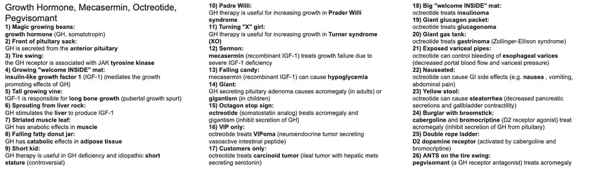
7. Glucocorticoids
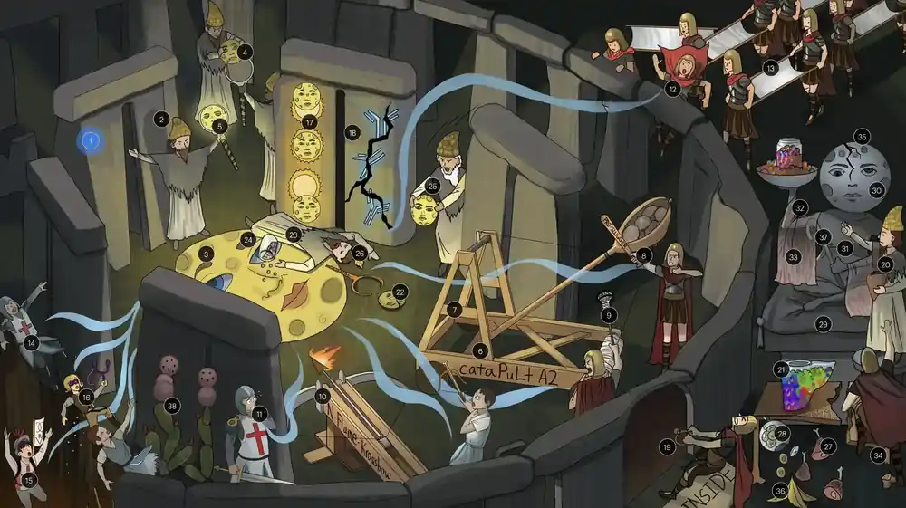
Exam snapshot
- Drugs: hydrocortisone, prednisone, prednisolone, methylprednisolone, dexamethasone, betamethasone, fludrocortisone (mostly mineralocorticoid).
- Mechanism: bind the cytoplasmic glucocorticoid receptor which translocates to the nucleus; inhibit PLA2 and NF-kappaB, decreasing prostaglandins, leukotrienes and cytokines; reduce lymphocytes and eosinophils.
- Indications: asthma/COPD flares, autoimmune and inflammatory diseases, transplant rejection, allergic reactions, adrenal insufficiency, cerebral edema, antenatal lung maturation (betamethasone).
- Adverse effects: Cushing syndrome, hyperglycemia, osteoporosis/AVN, skin thinning, myopathy, hypertension, hypokalemia, psychosis, cataracts, peptic ulcer, immunosuppression, adrenal suppression with abrupt withdrawal.
- Buzzwords: neutrophilia with lymphopenia and eosinopenia; taper to avoid adrenal crisis; screen for latent TB; stress-dose steroids perioperatively.
- 1Stone: "-sone" and "-solone" suffixes mark glucocorticoids (prednisone, prednisolone, methylprednisolone, dexamethasone, hydrocortisone, betamethasone); fludrocortisone is primarily a mineralocorticoid.
- 2Adrenal cap: Cortisol, the endogenous glucocorticoid, is released from the zona fasciculata of the adrenal cortex under ACTH control.
- 3Moon face: Glucocorticoid drugs mimic cortisol; the moon face represents both the drug class and its Cushingoid side effects.
- 4Moon scepter in outer circle: The glucocorticoid receptor is an intracellular (cytoplasmic) nuclear-receptor-family protein bound to heat-shock proteins until ligand binding.
- 5Activated scepter in inner circle: Ligand-bound receptor translocates to the nucleus and binds glucocorticoid response elements, altering gene transcription (transactivation and transrepression).
- 6Inhibited cataPuLt A2: Glucocorticoids induce lipocortin (annexin-1) and inhibit phospholipase A2, blocking release of arachidonic acid from membrane phospholipids.⭐ Steroids act upstream of NSAIDs: inhibit PLA2.
- 7AA frame of catapult A2: By blocking PLA2, glucocorticoids prevent formation of arachidonic acid, the substrate for both prostaglandin and leukotriene synthesis.
- 8Inhibited pro-slugger bat: Glucocorticoids reduce inflammatory prostaglandins, in part by decreasing COX-2 expression.
- 9Inhibited lacrosse stick: Glucocorticoids reduce leukotriene production (lipoxygenase pathway) via decreased arachidonic acid substrate.
- 10Inhibited N-Flame Krossbow: Glucocorticoids inhibit the transcription factor NF-kappaB, reducing expression of cytokines (IL-1, IL-2, TNF-alpha) and adhesion molecules.
- 11Inhibited T-knight and antibody archer: Reduced cytokine production (especially IL-2) prevents activation and proliferation of T cells and subsequently B cells, producing immunosuppression.
- 12Blocked adhesion of first responders: Glucocorticoids decrease neutrophil adhesion molecule expression (L-selectin, integrins), causing demargination from vessel walls and reduced migration to inflammation.
- 13Crowded first responders: Demargination increases circulating neutrophils (neutrophilia, with increased marrow release) while neutrophil function is impaired.⭐ Steroids cause neutrophilia but lymphopenia and eosinopenia.
- 14Falling T-knight, helper T-squire, and antibody archer: Glucocorticoids reduce circulating T and B lymphocyte counts (lymphopenia) via redistribution and apoptosis.
- 15Helper T-squire lowest: CD4 helper T cells are most strongly reduced, increasing opportunistic infection risk.
- 16Falling eo-slingshot: Glucocorticoids decrease peripheral eosinophils (eosinopenia) via apoptosis and redistribution.
- 17Eclipsed inflammatory sun: Glucocorticoids treat inflammatory disorders: asthma/COPD exacerbations, rheumatoid arthritis, gout flare, IBD, allergic reactions, cerebral edema.
- 18Cracked antibodies: Glucocorticoids are immunosuppressants for transplant rejection prevention and autoimmune diseases (SLE, vasculitis, ITP, autoimmune hemolytic anemia) and for lymphoid malignancies.
- 19Locked welcome inside mat: Glucocorticoids induce insulin resistance and hyperglycemia (can unmask or worsen diabetes).
- 20Liver bag producing candy: Glucocorticoids stimulate hepatic gluconeogenesis (PEPCK, glucose-6-phosphatase), raising blood glucose.
- 21Sugar-filled liver jar: Glucocorticoids increase hepatic glycogen storage (glycogen synthase) while promoting gluconeogenesis.
- 22Cracked moon: Adrenal insufficiency (primary, such as Addison disease with ACTH high and hyperpigmentation, or secondary) results from inadequate cortisol; treated with glucocorticoid replacement.
- 23Fainted druid: Acute adrenal insufficiency (adrenal crisis) causes hypotension, circulatory shock and death if untreated; precipitated by stress, infection or abrupt steroid withdrawal.
- 24Falling candy: Cortisol deficiency causes hypoglycemia (impaired gluconeogenesis).
- 25Exogenous moon face: Exogenous glucocorticoids (IV hydrocortisone or dexamethasone) treat adrenal crisis; stress-dose steroids are used in patients on chronic therapy facing surgery or severe illness.
- 26Shriveled adrenal hat: Chronic exogenous steroid use suppresses CRH and ACTH (negative feedback), causing adrenal atrophy (secondary adrenal insufficiency); therefore taper rather than abruptly stop.⭐ ACTH low, cortisol low, no hyperpigmentation, aldosterone intact.
- 27Falling meat: Glucocorticoids promote proteolysis (muscle protein catabolism), providing amino acids for gluconeogenesis.
- 28Falling fatty donut jar: Glucocorticoids promote lipolysis in peripheral adipose, although central fat is redistributed.
- 29Cushion: Iatrogenic Cushing syndrome from chronic glucocorticoid use produces fat redistribution, muscle weakness, skin thinning, osteoporosis, hypertension, hyperglycemia and immunosuppression.
- 30Moon face: Moon facies due to facial fat deposition.
- 31Fat belly: Central (truncal) obesity with a buffalo hump.
- 32Thin arms: Steroid myopathy: proximal muscle wasting and weakness.
- 33Thin striped fabric: Inhibited fibroblast proliferation and collagen synthesis causes skin thinning, purple striae, easy bruising and impaired wound healing.
- 34Fractured osteoporotic altar: Glucocorticoids reduce bone formation and increase resorption, causing osteoporosis, fractures and avascular necrosis of the femoral head; prevent with calcium, vitamin D and bisphosphonates.
- 35Cracked head: Glucocorticoid-induced psychiatric effects: mood changes, insomnia, mania, psychosis and depression.
- 36Banana peel: Glucocorticoids with mineralocorticoid activity can cause hypokalemia, sodium and water retention, hypertension and metabolic alkalosis (most with hydrocortisone and fludrocortisone).
- 37Cane: Glucocorticoids cause immunosuppression with increased risk of infection (bacterial, fungal, viral).
- 38Pulmonary cacti: Glucocorticoids can reactivate latent infections such as TB (screen before chronic therapy), and can cause Pneumocystis pneumonia (prophylaxis with TMP-SMX).⭐ Other adverse effects: cataracts, peptic ulcers (with NSAIDs), pancreatitis.
Show the original legend picture
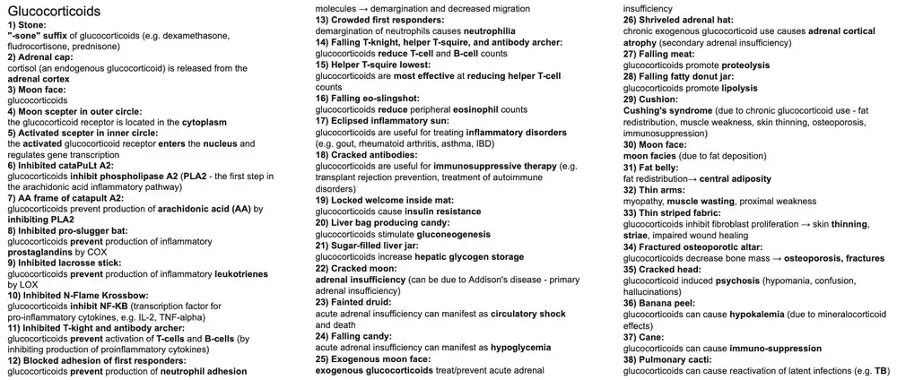
8. Propylthiouracil, Methimazole, Levothyroxine
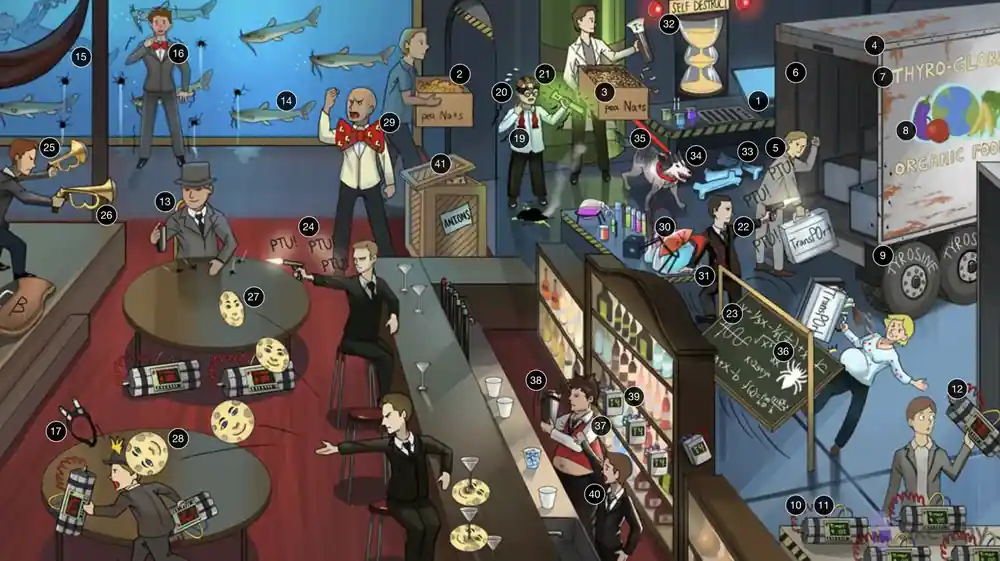
Exam snapshot
- Drugs: propylthiouracil (PTU), methimazole (carbimazole), levothyroxine (T4), liothyronine (T3); adjuncts: beta blockers, glucocorticoids, iodide, radioiodine, perchlorate.
- Mechanism: thionamides inhibit thyroid peroxidase (oxidation, organification, coupling); PTU also inhibits peripheral 5'-deiodinase (T4 to T3); levothyroxine replaces T4.
- Indications: Graves' disease and toxic nodular goiter (thionamides, radioiodine, surgery), thyroid storm (beta blocker, PTU, iodide, steroids), hypothyroidism (levothyroxine).
- Adverse effects: rash, agranulocytosis, aplastic anemia; PTU - hepatotoxicity, ANCA vasculitis; methimazole - first-trimester teratogen; levothyroxine overdose - iatrogenic hyperthyroidism, AF, bone loss.
- Pregnancy: PTU first trimester, methimazole afterward; radioiodine contraindicated; thyroid storm - thionamide before iodide; radioiodine eventually causes hypothyroidism.
- 1Evil follicu-LAIR: The thyroid follicular cell is the site of iodide uptake and thyroid hormone synthesis; follicles are lined by follicular cells around a colloid-filled lumen.
- 2Salty sodium peanuts entering lair: The sodium-iodide symporter (NIS) on the basolateral membrane cotransports 2 Na+ with 1 I- into the follicular cell (secondary active transport, driven by Na+/K+ ATPase).
- 3Iodide vial smuggled in with salty peanuts: NIS concentrates iodide inside the follicular cell (also in salivary glands, stomach and breast); this is the basis of radioiodine therapy and uptake studies.
- 4Follicu-LAIR truck lumen: The follicular lumen (colloid) stores thyroid hormone precursors as iodinated thyroglobulin.
- 5TransPOrter: Thyroid peroxidase (TPO), at the apical membrane, catalyzes iodide oxidation, organification and coupling.
- 6Rusty oxidized transport truck: TPO oxidizes iodide (I-) to reactive iodine (I0/I+) using hydrogen peroxide.
- 7"Thyro-global" truck: Thyroglobulin is a tyrosine-rich glycoprotein in the follicular lumen that is the scaffold for thyroid hormone synthesis.
- 8Organic foods transporter truck: TPO catalyzes organification: iodination of tyrosine residues on thyroglobulin to form MIT and DIT.
- 9Coupled tyres of transport truck: TPO couples iodinated tyrosines: DIT + DIT forms T4 and MIT + DIT forms T3.⭐ TPO is the target of thionamides.
- 10Time bomb prep table in the follicu-LAIR: Iodinated thyroglobulin is endocytosed and cleaved by lysosomal proteases, releasing T4 (major product) and T3 into the circulation.
- 11T4 time bomb: Thyroxine (T4, tetraiodothyronine) is the main secreted hormone, a prohormone with a long half-life (about 7 days).
- 12T3 time bomb: Triiodothyronine (T3) is the more potent, biologically active form with a shorter half-life.
- 13T4 detonator in the periphery: Peripheral 5'-deiodinase converts T4 to active T3 (inhibited by PTU, propranolol and glucocorticoids).
- 14Sensitive to catfish: Thyroid hormone upregulates beta-adrenergic receptors, increasing sensitivity to catecholamines (tachycardia, tremor).
- 15Falling henchman sensitive to catfish in the periphery: Same concept: increased beta-adrenergic receptor number in peripheral tissues explains the hyperadrenergic features and why beta blockers are effective.
- 16Anxious henchman with big bowtie: Hyperthyroidism causes a hypermetabolic and hyperadrenergic state: tachycardia, palpitations, insomnia, anxiety, tremor, heat intolerance, weight loss, diarrhea.
- 17Bulging infrared goggles: Graves' ophthalmopathy: autoantibody-driven inflammation causes glycosaminoglycan accumulation and retro-orbital connective tissue expansion, causing exophthalmos.⭐ Graves' eye disease is not treated by thionamides.
- 18Radioactive vial: Radioactive iodine (I-131) is taken up via NIS and destroys thyroid tissue; definitive therapy for Graves' disease and toxic nodules.
- 19Undone bowtie: Radioiodine ablation commonly results in permanent hypothyroidism needing lifelong levothyroxine.
- 20Anxious radioactive henchman: Radiation thyroiditis releases preformed hormone, transiently worsening hyperthyroidism (pretreat with thionamide/beta blocker).
- 21Bulging radioactive goggles: Radioiodine can worsen Graves' ophthalmopathy (especially in smokers); give prophylactic glucocorticoids.
- 22"PTU!" agent firing at the transporter: Propylthiouracil (a thionamide) inhibits TPO, blocking oxidation, organification and coupling of iodine, thereby decreasing thyroid hormone synthesis.
- 23Evil math equations striking transporter: Methimazole (thionamide) also inhibits TPO; carbimazole is its prodrug.
- 24"PTU!" agent firing at the bomb trigger: PTU additionally inhibits peripheral 5'-deiodinase, decreasing conversion of T4 to T3 (methimazole does not).⭐ Only PTU blocks peripheral T4-to-T3 conversion.
- 25Silenced bugle gun pointed at catfish tank: Beta blockers (propranolol, atenolol) treat the adrenergic symptoms of hyperthyroidism (tachycardia, tremor, anxiety).
- 26Silenced bugle gun pointed at trigger: Propranolol (nonselective) also inhibits 5'-deiodinase, decreasing peripheral T4-to-T3 conversion.
- 27Moon face death coaster blocking trigger: High-dose glucocorticoids inhibit peripheral 5'-deiodinase and reduce T4-to-T3 conversion.
- 28Moon face death coaster hitting goggles: Glucocorticoids treat Graves' ophthalmopathy by reducing orbital inflammation.
- 29Thwarted Dr. Storm: Thyroid storm treatment: beta blockers (sympathetic blockade, propranolol), thionamide (PTU), then iodide after thionamide, and glucocorticoids; the last three also block T4 to T3 conversion (PTU, propranolol, steroids).
- 30Broken liver beaker: PTU can cause severe hepatotoxicity and liver failure (boxed warning), so it is reserved for first trimester pregnancy, thyroid storm and methimazole intolerance.⭐ PTU: liver. Methimazole: fetus.
- 31Chemical spots: Thionamides commonly cause pruritic maculopapular rash (most common adverse effect).
- 32Self destruct sand timer: Both thionamides can cause agranulocytosis (check CBC and counsel to report fever or sore throat).
- 33Plastic chew bones: Thionamides can also cause aplastic anemia (bone marrow suppression).
- 34Guard wolf: Thionamides can cause drug-induced lupus.
- 35Inflamed leash: PTU (more than methimazole) can cause ANCA-positive (p-ANCA) vasculitis.
- 36Tarantula: Methimazole is a first-trimester teratogen (aplasia cutis, choanal atresia, tracheoesophageal fistula), so PTU is used in the first trimester then switch to methimazole.
- 37Fat, cold, fatigued mixologist: Hypothyroidism: fatigue, lethargy, weakness, cold intolerance, weight gain, constipation, bradycardia, dry brittle hair, myxedema, low BMR.
- 38Mixing cold drinks: Severe untreated hypothyroidism can progress to myxedema coma: stupor, hypothermia, hypoventilation, hypotension, hypoglycemia, hyponatremia; treat with IV levothyroxine and hydrocortisone.
- 39Synthetic T4 time bombs: Levothyroxine, synthetic T4, treats hypothyroidism and is converted peripherally to T3.
- 40Anxious agent taking cover: Excess levothyroxine causes iatrogenic hyperthyroidism (tachycardia, tremor, bone loss).
- 41Obstructive box of anions: Perchlorate, pertechnetate and thiocyanate competitively inhibit the sodium-iodide symporter, reducing iodide uptake; used to block uptake of radioactive iodine after accidental exposure and in iodine-induced hyperthyroidism.
Show the original legend picture
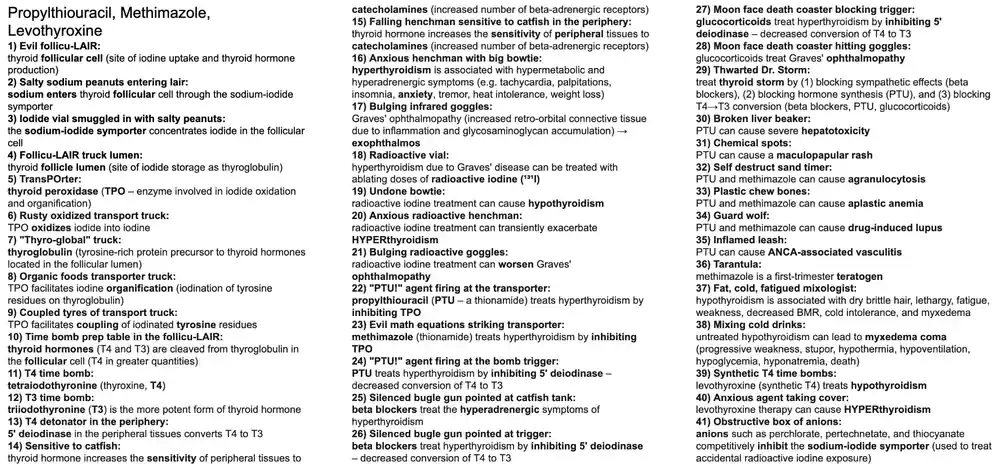